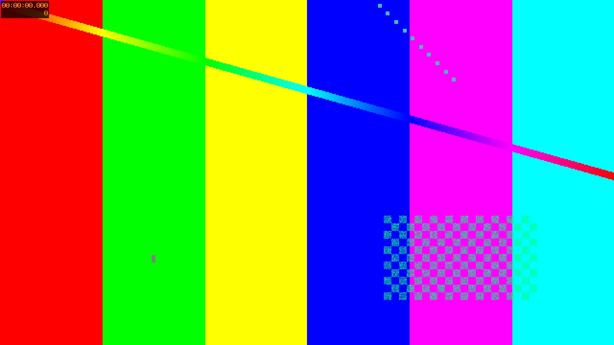

Text, shapes, a photo, footage and sound in one pass.

01
Flexbox and grid lay out every scene before Skia paints it.
02
Timelines become keyframe tracks at compile time.
03
Video layers stream frames through FFmpeg.
04
A bed under every scene, encoded with the picture.
05
This page renders in HyperFrames and in Director.
06